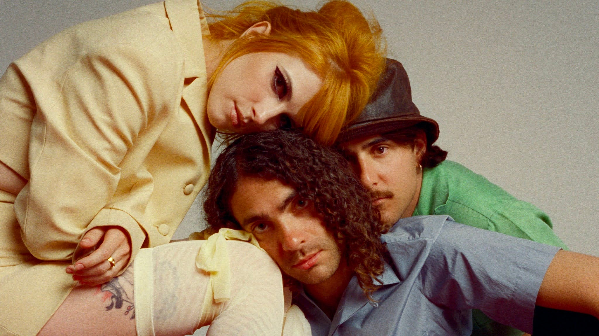

Terminal Sleep é uma banda em ascenção no cenario do hardcore punk/metalcore. Fazendo um escândalo com propósito; A banda infunde caos e catarse em cada música, acompanhada por performances ao vivo intensas.
Baseado em Melbourne, Austrália (Naarm), mas moldado por raízes que se estendem por Melbourne, Hobart, Nova Zelândia (Aotearoa) e Filipinas - Terminal Sleep acertou forte com seu groove contagiante, riffs alucinantes e vocais ferozes.
A banda entrou em grande com seu single de estreia 'Death Therapy' em 2022 – e desde então não olharam mais para o lado do outro. Em 2025, dividiram palco com Kublai Khan, Gideon, Gates To Hell, Harm's Way, Counterparts, Dying Wish e Speed, enquanto atravessavam o circuito de festivais europeus de verão com a mesma presença inegável.
Em julho de 2025, o Terminal Sleep assinou globalmente com a Nuclear Blast Records. Nova era se aproximando.
Musica favorita: Elicit Fear